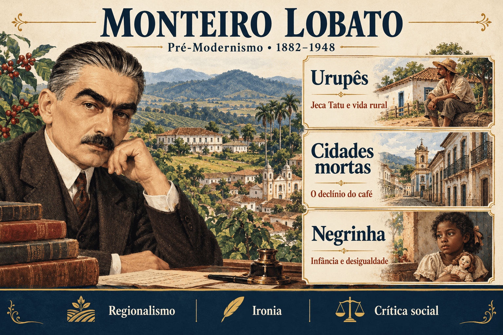

Monteiro Lobato: biografia, obras, Jeca Tatu e características literárias
Monteiro Lobato foi escritor, editor, tradutor e um dos principais nomes do Pré-Modernismo brasileiro. Embora seja amplamente conhecido pelo universo do Sítio do Picapau Amarelo, sua produção para adultos ocupa lugar importante na literatura nacional, especialmente pela representação do interior paulista e pela discussão dos impasses do país.
Em Urupês, Cidades mortas e Negrinha, o autor articula regionalismo, observação dos costumes, ironia e crítica social. Seu olhar sobre o mundo rural, porém, também apresenta preconceitos e contradições que precisam ser considerados na interpretação.
Estudar Lobato envolve compreender tanto sua contribuição literária e editorial quanto os limites de suas representações. A mudança na concepção de Jeca Tatu, a decadência de antigas localidades cafeeiras e a violência sofrida pela protagonista de Negrinha são eixos centrais dessa leitura.

Monteiro Lobato em resumo
- Nome: José Bento Renato Monteiro Lobato, nascido José Renato Monteiro Lobato.
- Nascimento: 18 de abril de 1882, em Taubaté, São Paulo.
- Falecimento: 4 de julho de 1948, em São Paulo.
- Período literário: sua prosa adulta inicial é estudada no Pré-Modernismo.
- Atuação: escritor, editor, tradutor, jornalista e empresário.
- Obras em destaque: Urupês (1918), Cidades mortas (1919) e Negrinha (1920).
- Personagem emblemática: Jeca Tatu, cuja representação se modifica ao longo da trajetória do autor.
- Características: regionalismo, ironia, linguagem expressiva, crítica de costumes e atenção às condições de vida no campo.
Quem foi Monteiro Lobato?
Nascido em Taubaté, no Vale do Paraíba paulista, Lobato formou-se em Direito e exerceu a função de promotor público em Areias. Também administrou a fazenda do Buquira, experiência que contribuiu para sua observação do cotidiano rural. Sua posição de proprietário é relevante para compreender os juízos que formulou sobre os trabalhadores do campo.
Ao longo da vida, atuou na imprensa, na edição de livros e em campanhas ligadas ao desenvolvimento brasileiro. A saúde pública, a exploração do petróleo e a modernização econômica integraram seus interesses. Essas preocupações se relacionam com sua literatura, mas não constituem um pensamento uniforme ou livre de contradições.
Na produção infantil, desenvolveu um universo marcado por diálogo, fantasia e circulação de conhecimentos. Na produção adulta, explorou os conflitos do interior, a fragilidade das aparências sociais e as desigualdades. As duas vertentes fazem parte de uma trajetória que ultrapassa os limites cronológicos convencionais do Pré-Modernismo.
Contexto histórico: café, pós-abolição e modernização
A prosa regionalista de Lobato se relaciona às transformações do Brasil entre o final do século XIX e as primeiras décadas do século XX. A prosperidade não se distribuía de maneira uniforme: o avanço de novos centros econômicos convivia com o declínio de antigas áreas produtoras e com a precariedade das condições de vida de grande parte da população.
- Economia cafeeira: o deslocamento da expansão do café para outras regiões alterou a importância de localidades do Vale do Paraíba.
- Desgaste ambiental: o uso predatório da terra e as queimadas aparecem como problemas associados à exploração rural.
- Pós-abolição: o fim jurídico da escravidão não eliminou o racismo nem a permanência de relações de dominação.
- Saúde e saneamento: pesquisas sobre doenças rurais alimentaram debates a respeito do abandono de trabalhadores e comunidades.
- Projetos nacionais: diferentes grupos disputavam explicações para o chamado atraso brasileiro e propostas para superá-lo.
Chave de leitura: Lobato representa o interior a partir de uma perspectiva situada. Seu texto permite discutir problemas sociais, mas não deve ser tomado como descrição neutra de todos os habitantes do campo.
Monteiro Lobato e o Pré-Modernismo
O Pré-Modernismo é uma classificação histórica que reúne projetos literários diversos, convencionalmente situados entre 1902 e 1922. Não corresponde a uma escola com linguagem única ou manifesto coletivo.
Lobato se aproxima desse quadro pelo interesse em realidades brasileiras pouco idealizadas, pela crítica de costumes e pelo questionamento de imagens grandiosas da nação. Seu regionalismo dialoga com a tradição realista e desloca a atenção para o cotidiano de localidades do interior.
Essa posição não o transforma em participante do programa estético da Semana de Arte Moderna. Sua crítica à exposição de Anita Malfatti, em 1917, evidencia resistência a aspectos da arte de vanguarda. O episódio mostra que interesse pelos problemas nacionais e adesão às novas formas artísticas não são a mesma coisa.
Características literárias de Monteiro Lobato
- Regionalismo paulista: paisagens, costumes e relações sociais do interior participam da construção dos conflitos.
- Ironia: contrastes entre aparência e comportamento revelam hipocrisias e desmontam reputações.
- Caricatura e exagero: determinados traços são intensificados para produzir humor, crítica ou desconforto.
- Linguagem expressiva: comparações, imagens incisivas e aproximação com a oralidade tornam a narração dinâmica.
- Crítica à idealização: o campo não aparece apenas como espaço harmonioso ou reserva de virtudes nacionais.
- Tensão entre humor e tragédia: o riso pode revelar crueldade, exploração e sofrimento.
- Perspectivas contraditórias: a denúncia de uma injustiça pode coexistir com estereótipos e hierarquias presentes em outras passagens ou obras.
Principais obras e campos de atuação
| Obra | Ano | Características e importância |
|---|---|---|
| Urupês | 1918 | Contos e textos de intervenção; regionalismo e representação inicial de Jeca Tatu. |
| Problema vital | 1918 | Artigos sobre saúde e saneamento; importante para acompanhar a revisão do diagnóstico sobre o homem rural. |
| Cidades mortas | 1919 | Coletânea ligada aos costumes provincianos e às imagens de declínio do interior. |
| Ideias de Jeca Tatu | 1919 | Artigos e reflexões sobre arte, cultura e questões brasileiras. |
| Negrinha | 1920 | Coletânea cujo conto de abertura denuncia a violência contra uma criança negra. |
| A menina do narizinho arrebitado | 1920 | Marco inicial de sua produção infantil, posteriormente reelaborada. |
| Reinações de Narizinho | 1931 | Reúne e reelabora narrativas do universo do Sítio do Picapau Amarelo. |
Urupês: regionalismo e crítica à idealização do caboclo
Publicado em 1918, Urupês reúne narrativas e textos de intervenção sobre o mundo rural. É importante distinguir o livro do texto que lhe dá título: este circulou originalmente na imprensa em 1914 e está ligado à construção da figura de Jeca Tatu.
A palavra urupês designa fungos que crescem em madeira. No texto, essa imagem integra uma representação depreciativa do caboclo, associado à acomodação e à falta de participação no progresso. A metáfora deve ser examinada como escolha do discurso, e não aceita como verdade sobre uma população.
O autor procura se afastar da idealização do homem da terra. Entretanto, desfazer uma imagem heroica não garante uma representação justa: a oposição entre o caboclo idealizado e o caboclo desqualificado pode substituir um estereótipo por outro.
Atenção: Urupês não é um romance com enredo contínuo protagonizado por Jeca Tatu. Também é impreciso tratar todos os textos do volume como contos de organização idêntica.
Jeca Tatu: do estereótipo à questão sanitária
Jeca Tatu tornou-se uma das representações mais conhecidas do trabalhador rural brasileiro. Sua leitura exige acompanhar mudanças de perspectiva, evitando atribuir ao autor uma interpretação única durante toda a vida.
A representação inicial
Nos textos iniciais, a aparente indolência do Jeca é interpretada de modo depreciativo. O trabalhador aparece como incapaz de corresponder às exigências do desenvolvimento. Essa visão se relaciona à posição do proprietário rural e a explicações que hierarquizavam grupos humanos.
A revisão sanitarista
O contato com pesquisas sobre as condições de vida no interior e com o movimento sanitarista contribuiu para uma mudança de diagnóstico. Em vez de considerar a apatia uma característica inerente ao trabalhador, Lobato passou a enfatizar doenças e falta de assistência.
Problema vital, de 1918, é central para compreender essa revisão. A saúde e o saneamento passam a ser apresentados como condições de transformação da vida rural. A mudança desloca a atenção para problemas que poderiam ser enfrentados por ações coletivas.
| Aspecto | Representação inicial | Reformulação sanitarista |
|---|---|---|
| Interpretação da apatia | Traço atribuído depreciativamente ao caboclo. | Consequência de doenças e de condições precárias de vida. |
| Possibilidade de mudança | Reduzida pela imagem de incapacidade. | Associada à saúde, à higiene e ao acesso a cuidados. |
| Questão para o leitor | Quem produz esse julgamento e quais preconceitos ele mobiliza? | Quais intervenções são propostas e quais problemas permanecem fora do diagnóstico? |
A revisão do Jeca é relevante, mas não permite concluir que Lobato tenha abandonado de modo completo e definitivo todas as concepções raciais hierarquizantes. As relações entre seu pensamento, o sanitarismo e a eugenia precisam ser examinadas historicamente.
Cidades mortas: o Vale do Paraíba e a decadência cafeeira
Publicado em 1919, Cidades mortas reúne textos relacionados ao interior e aos costumes provincianos. A imagem que dá nome ao volume condensa uma experiência de declínio: localidades que conheceram a prosperidade do café passam a conviver com a perda de dinamismo econômico.
Casarões, ruas e sinais de antigas fortunas contrastam com a redução das perspectivas do presente. O espaço deixa de ser mero pano de fundo e torna visível uma transformação histórica. A oposição entre o passado próspero e o presente enfraquecido organiza a imagem de uma região deixada para trás pelo deslocamento da riqueza.
É preciso, contudo, analisar a posição de quem narra. A perda de prestígio dos antigos grupos proprietários não equivale à experiência de toda a população. O passado de riqueza também esteve ligado à exploração do trabalho escravizado e a profundas desigualdades.
- Espaço e história: a paisagem expressa mudanças na economia e nas relações sociais.
- Contraste temporal: a memória de grandeza intensifica a percepção do declínio.
- Crítica de costumes: o provincianismo e o apego às aparências podem produzir efeitos satíricos.
- Perspectiva situada: a imagem literária da região deve ser interpretada, não tomada como retrato definitivo de suas cidades e moradores.
Negrinha: resumo e análise do conto
Negrinha é o título de uma coletânea de 1920 e também do conto que a abre. A narrativa acompanha uma menina negra, órfã, submetida a humilhações e agressões na casa de Dona Inácia, antiga senhora de pessoas escravizadas.
Embora a escravidão tenha sido abolida, a proprietária conserva práticas de mando e castigo. A menina é privada de afeto e de liberdade para brincar. A denominação pela qual é conhecida reforça o apagamento de sua individualidade: em vez de um nome próprio, recebe uma identificação racializada e diminutiva.
Dona Inácia e a ironia do narrador
A reputação de bondade e respeitabilidade de Dona Inácia entra em choque com sua crueldade. O narrador explora essa distância por meio da ironia: o elogio aparente, confrontado com as ações da personagem, torna-se denúncia.
Essa construção exige que o leitor não interprete literalmente todos os qualificativos elogiosos. O sentido crítico nasce do contraste entre prestígio público, religiosidade ostentada e violência doméstica.
A boneca e a descoberta da infância
A chegada de sobrinhas de Dona Inácia introduz uma experiência diferente. Ao conhecer uma boneca e participar por um momento da brincadeira, a protagonista vislumbra uma possibilidade de vida até então negada.
A boneca representa mais do que um objeto desejado: torna visível o acesso desigual ao brincar e ao reconhecimento. O contraste entre a liberdade das visitantes e as restrições impostas à menina explicita que a infância não é socialmente vivida da mesma maneira por todas as crianças.
O desfecho trágico
Depois da partida das visitantes, a breve experiência de alegria não se converte em transformação duradoura. A menina definha e morre. O desfecho intensifica a denúncia de uma ordem incapaz de assegurar proteção e dignidade à criança.
Uma leitura crítica não deve apresentar essa morte como solução para o sofrimento. Sua função no conto é evidenciar o alcance destrutivo da desumanização e a indiferença que a sustenta.
Para interpretar: a abolição aparece como mudança jurídica que não desfez automaticamente práticas escravistas. A violência de Dona Inácia revela a persistência de relações de poder e discriminação.
Racismo e contradições na obra de Lobato
A denúncia da violência em Negrinha não autoriza apresentar toda a produção de Lobato como antirracista. Sua correspondência e outros escritos registram concepções racistas e aproximações com o pensamento eugênico, tema examinado por pesquisas históricas.
É necessário distinguir autor, narrador e personagem, observando como os sentidos se constroem em cada texto. Essa distinção não apaga as evidências históricas nem transforma toda expressão discriminatória em ironia. Cabe avaliar quem enuncia, como a narrativa trata a afirmação e quais hierarquias são reproduzidas ou questionadas.
Contextualizar significa compreender a circulação dessas ideias e suas disputas. Não significa tratá-las como inevitáveis: existiam vozes que enfrentavam o racismo no mesmo período, como se observa na trajetória de Lima Barreto.
O editor e o escritor de literatura infantil
Lobato também teve atuação importante na ampliação da circulação dos livros. Investiu em apresentação gráfica, divulgação e redes de distribuição, contribuindo para mudanças no mercado editorial. A história do livro brasileiro, entretanto, é anterior a ele; sua importância não exige atribuir-lhe a criação isolada da atividade editorial no país.
Na literatura infantil, o universo do Sítio do Picapau Amarelo aproximou fantasia, cultura popular, curiosidade e debates sobre conhecimento. Essa vertente ajuda a compreender sua projeção cultural, mas não substitui o estudo da prosa adulta, foco de obras como Urupês, Cidades mortas e Negrinha.
Monteiro Lobato e Lima Barreto: aproximações e diferenças
| Aspecto | Monteiro Lobato | Lima Barreto |
|---|---|---|
| Espaço de destaque | O interior paulista e as transformações do mundo rural. | O Rio de Janeiro, com destaque para os subúrbios. |
| Questões sociais | Decadência econômica, saúde, costumes e impasses do desenvolvimento. | Racismo, burocracia, exclusão e autoritarismo republicano. |
| Recursos expressivos | Ironia, caricatura e contrastes entre humor e tragédia. | Ironia, sátira e observação crítica das relações cotidianas. |
| Questão racial | Denúncias pontuais coexistem com posições e representações racistas. | O enfrentamento da discriminação racial é eixo central da produção. |
Monteiro Lobato no ENEM, no PAES UEMA e nos vestibulares
Para estudar o autor, relacione as características de linguagem aos conflitos representados. Os tópicos abaixo orientam a leitura; não constituem previsão de questões nem indicação de obra obrigatória.
- A revisão da representação de Jeca Tatu e a importância do saneamento.
- A crítica à idealização do homem rural em Urupês.
- A relação entre paisagem, memória e economia em Cidades mortas.
- A ironia na apresentação de Dona Inácia em Negrinha.
- A persistência da violência escravista no período posterior à abolição.
- As contradições raciais e a necessidade de examinar a posição de quem narra.
Como interpretar um trecho?
- Identifique o narrador e a posição social a partir da qual ele observa o mundo.
- Procure contrastes entre elogio e ação, passado e presente, aparência e realidade.
- Observe se as características atribuídas às personagens são explicadas como naturais ou relacionadas às condições de vida.
- Relacione a construção do espaço aos conflitos econômicos e sociais.
- Avalie o efeito do humor: ele questiona uma injustiça ou reforça uma desqualificação?
Erros comuns ao estudar Monteiro Lobato
- Reduzi-lo à literatura infantil: sua produção adulta é central para o estudo do Pré-Modernismo.
- Tratar Jeca Tatu como representação imutável: o diagnóstico sobre a personagem se modifica.
- Chamar Urupês de romance: o volume reúne textos diferentes, sem enredo único.
- Interpretar os elogios a Dona Inácia literalmente: o contraste com a crueldade sustenta a ironia.
- Confundir abolição com igualdade efetiva: Negrinha representa a permanência de práticas de dominação.
- Usar um conto como prova de ausência de racismo em toda a obra: cada texto deve ser relacionado ao conjunto e à documentação histórica.
- Confundir Pré-Modernismo e Semana de 1922: eles não designam o mesmo programa estético.
Quiz sobre Monteiro Lobato
Questões de interpretação — nível avançado
Questão 1 — Na reformulação sanitarista de Jeca Tatu, qual mudança de interpretação se destaca?
Questão 2 — O contraste entre a respeitabilidade de Dona Inácia e a violência contra a menina produz:
Questão 3 — Em Cidades mortas, o contraste entre sinais da antiga riqueza e o presente enfraquecido permite:
Questão 4 — A experiência da protagonista de Negrinha com a boneca é relevante porque:
Questão 5 — A denúncia da crueldade em Negrinha e a presença de posições racistas em outros escritos exigem:
Questão 6 — A inserção de Lobato no Pré-Modernismo, apesar de sua resistência à arte de vanguarda, evidencia que:
Resumo final sobre Monteiro Lobato
- Monteiro Lobato viveu entre 1882 e 1948 e teve atuação literária e editorial.
- Sua prosa adulta inicial integra o estudo do Pré-Modernismo.
- Urupês problematiza a idealização do mundo rural, mas também mobiliza estereótipos.
- A representação de Jeca Tatu se modifica com a atenção à saúde e ao saneamento.
- Cidades mortas relaciona paisagem, memória e decadência cafeeira.
- Negrinha denuncia a violência contra uma criança negra e a persistência de práticas escravistas.
- A importância do escritor deve ser estudada em conjunto com suas contradições raciais e políticas.
Perguntas frequentes sobre Monteiro Lobato
Quem foi Monteiro Lobato?
Foi um escritor, editor e tradutor brasileiro, nascido em Taubaté em 1882 e falecido em São Paulo em 1948, com importante produção adulta e infantil.
A qual período literário pertence Monteiro Lobato?
Sua prosa adulta inicial é estudada no Pré-Modernismo, mas sua trajetória e suas publicações ultrapassam os limites convencionais desse período.
Quais obras são centrais para estudar sua prosa adulta?
Urupês, de 1918, Cidades mortas, de 1919, e Negrinha, de 1920, são obras fundamentais para compreender seu regionalismo e sua crítica de costumes.
Quem é Jeca Tatu?
É uma personagem associada ao trabalhador rural. Sua representação inicial depreciativa foi posteriormente reformulada com maior atenção às doenças e às condições precárias de vida.
Urupês é um romance?
Não. É um volume que reúne contos e textos de intervenção, sem um enredo contínuo. O texto que dá título ao livro está ligado à figura de Jeca Tatu.
O que significa o título Cidades mortas?
O título condensa uma imagem de declínio de localidades do interior, especialmente relacionada às transformações da economia cafeeira do Vale do Paraíba.
Qual é a principal crítica do conto Negrinha?
O conto denuncia a violência e a desumanização de uma criança negra, mostrando a persistência de práticas escravistas depois da abolição.
Como estudar as contradições raciais de Lobato?
É necessário analisar cada texto, distinguir autor, narrador e personagem e considerar a documentação histórica, sem usar denúncias pontuais para negar posições racistas presentes em outros escritos.
Conteúdos relacionados
- Pré-Modernismo no Brasil: contexto, características, autores e obras
- Lima Barreto: biografia, obras e crítica social
- Euclides da Cunha: vida, obras e características literárias
- Realismo no Brasil: contexto, características e autores
- Naturalismo no Brasil: características, autores e obras
- Aluísio Azevedo: biografia, obras e características literárias
Conclusão
Monteiro Lobato ocupa um lugar expressivo na literatura brasileira pela representação do interior, pela força de seus contos e por sua atuação editorial. Suas obras permitem discutir a desigualdade, a saúde pública, as mudanças econômicas e a distância entre respeitabilidade e prática social.
A leitura se torna mais consistente quando evita tanto a celebração sem exame quanto a redução da obra a uma fórmula única. Acompanhar as mudanças do Jeca, a perspectiva de Cidades mortas e a construção irônica de Negrinha permite reconhecer o alcance e os limites desse projeto literário.
Referências
- LOBATO, Monteiro. Urupês. Publicado originalmente em 1918.
- LOBATO, Monteiro. Cidades mortas. Publicado originalmente em 1919. Consultar registro na Biblioteca Digital de Literaturas da UFSC.
- LOBATO, Monteiro. Negrinha. Publicado originalmente em 1920. Consultar edição na Biblioteca Brasiliana Guita e José Mindlin — USP.
- UNIVERSIDADE ESTADUAL DE CAMPINAS. Fundo Monteiro Lobato: informações e biografia. Centro de Documentação Cultural Alexandre Eulalio — IEL. Consultar acervo.
- BRASILIANA FOTOGRÁFICA. Os “Instantâneos Cruéis” de Monteiro Lobato. 2021. Consultar estudo sobre Jeca Tatu e saneamento.
- SILVA, Luciana Meire da. Cidades Mortas: o declínio da “civilização cafeeira” no Vale do Paraíba segundo a elite agrária decadente. Idéias, v. 3, n. 1, p. 289–305, 2012. Consultar artigo.
- MWEWA, Christian Muleka; OLIVEIRA, Anailta Bastos de; SILVA, Angélica Caetano da. Racismo e o lugar do brincar: Negrinha de Monteiro Lobato (1920). Zero-a-Seis, 2023. Consultar artigo.
- LEAL, Rhaiane das Graças Mendonça; SILVA, André Felipe Candido da. O racismo em “Mangas de Camisa”: a questão racial na correspondência de Monteiro Lobato com Arthur Neiva (1918–1942). Fênix — Revista de História e Estudos Culturais. Consultar pesquisa histórica.
- MONTEIRO LOBATO. 1918–1925: Lobato Editor. Consultar cronologia editorial.
Explore Outros Conteúdos
Continue seus estudos acessando outras seções do site Mestre Kira: